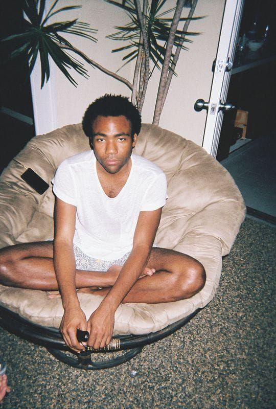

I spent my MCO days alone in my room,since I am stuck in college and most of my friends went back home. Only a few of my friends are here, so that is okay for me. Mostly my activities were watching movies, discovering new songs, eating, sleeping, and the rest is just spending my time alone.
THis is the artists that I love so much since forever, and spent my MCO days listening to them
Apollo-Steve LacyThis is Steve Lacy. His album, Apollo XII is my absolute favorite now. Would rate 10/10.
Cut That Always Bleeds-Conan GrayThis is Conan Lee Gray. I have been a fan during his Youtube career, until he became a famous and rising singer since 2018. His latest album, Kid Krow is an absolute masterpiece. 10/10.
 Childish Gambino-AlgorythmThis is Childish Gambino, also known as Donald Glover. he is a singer, also an actor. He is a very successful artist, and has a very nice voice. His latest album is 3.15.20. Would give 10/10.
Most of my activities are just boring things. I watch Netflix, eat, walk around the campus, and clean my room almost everyday. that is basically what I do during MCO, and waiting for ODL starts.